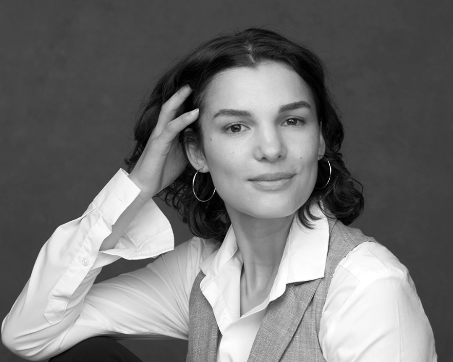

Dr Lucy Sabin
Lucy Sabin is a British artist-researcher based in Amsterdam with a radically interdisciplinary background. She is influenced by cultural geography, environmental humanities, feminist STS, and media theories as well as practices of graphic design, participatory arts, art-science, auto-ethnography, breathwork, and yoga. If air is a medium, then her PhD Aerography (literally, to draw or write the air) fulfils a desire to work with and within this medium in critical and creative ways. Sabin was supervised by Andrew Barry (UCL Geography) and Joy Sleeman (Slade School of Fine Art). She passed the viva voce without revisions in October 2024.
Sabin is co-editor of Chemical Exposures (UCL Press, forth.) and co-founder of the online Chemical Atlas. Her first solo exhibition on agrochemical exposures took place at the University of Bern in 2022. Previously, Sabin received the DYCP award from Arts Council England for Imag(in)ing Suspension and was Creative Associate (digital) at Modern Art Oxford where she designed the hybrid exhibition Breathworks. Her sound piece In memory of air produced as master's coursework at the Royal College of Art was featured on BBC Radio 4's Art of Now. She has held teaching posts in media, culture, and design at University of Sussex, the University for the Creative Arts, and Arts University Bournemouth.
